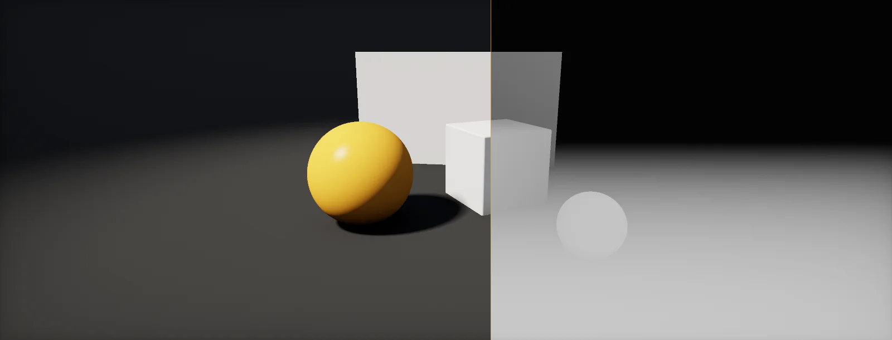

Depth Buffer Effects
One number per pixel says how far away the scene is. Soft particles, water, fog, decals, outlines and ambient occlusion all start by reading it. This unit takes the number apart and builds the effects on top.

Depth buffer contents
When the GPU draws a triangle, many triangles can land on the same pixel. To keep only the nearest one, it keeps a second image next to the colour: the , one number per pixel saying how far away the surface drawn there is (a render target).
Before shading a new pixel, the GPU compares its depth with the stored one. If the new surface is nearer, it wins: its colour is written and its depth replaces the stored value. If not, it is thrown away. That is the :
Because every opaque object writes its depth, the finished depth buffer is a picture of the scene's shape: for every pixel, the distance to the nearest surface. Every effect in this unit reads that picture after the opaque objects are drawn.
Non-linear depth
The depth buffer does not store metres. It stores the depth after the perspective divide, a value from 0 to 1 between the camera's near and far planes. That value is proportional to 1/z, not to z, so most of the range is spent close to the camera:
With a near plane of 0.1 m and a far plane of 1000 m, half of all depth values are used up in the first 20 cm. Far away, neighbouring surfaces get the same stored value and flicker against each other: . How large is the smallest distance step the buffer can tell apart?
The fix used by every modern engine is : store 1 at the near plane and 0 at the far plane, in a 32-bit float. Floats have their finest steps near 0 (float precision), exactly where 1/z needs them, and the two effects cancel out. The precision becomes almost the same fraction of the distance everywhere. Unity (on DirectX 11+, Vulkan and Metal) and Unreal both use it, so in shaders "nearer" means a larger raw depth value.
Linear eye depth
Effects need real distances, so the first thing a depth-based shader does is invert the formula from the previous chapter. Solve it for z and you get the , the distance along the camera's forward axis:
You rarely type this formula: engines pack the near and far values into a constant (a constant buffer) and give you a function. A second, normalized version, Linear01Depth, divides by the far plane so that 1 means "at the far plane".
Sample the depth with SampleCameraDepth(uv) (or the Scene Depth node), then LinearEyeDepth(rawDepth, _ZBufferParams). The Scene Depth node has a Sampling Mode with Raw, Linear01 and Eye. The depth texture holds the opaque objects only.
Enable Depth Texture in the URP asset (or on the camera). In code, include DeclareDepthTexture.hlsl and call SampleSceneDepth(uv), then LinearEyeDepth(raw, _ZBufferParams). In Shader Graph, the Scene Depth node in Eye mode does both.
The SceneDepth material node already returns linear depth in centimetres (translucent and post-process materials only). PixelDepth is the depth of the pixel being shaded. Raw device depth is rarely needed in materials.
Position from depth
Depth plus the pixel's position on screen is enough to recover the full 3D point. The pixel's NDC gives the direction of its view ray; walking along that ray to the linear depth lands on the surface. In view space, with the camera looking along +z:
The horizontal axis works the same with the aspect ratio. Rotate the result by the camera-to-world matrix (the chain of spaces) for a world position. This one step turns a 2D image into geometry: decals, fog, SSAO and screen-space reflections all start with it.
// view-space position of a pixel from its UV and raw depth float eye = LinearEyeDepth(rawDepth, _ZBufferParams); float2 ndc = uv * 2 - 1; float3 posVS = float3(ndc.x * tanHalfFov * aspect, ndc.y * tanHalfFov, 1) * eye; // Unity also offers ComputeWorldSpacePosition(uv, rawDepth, UNITY_MATRIX_I_VP)
Soft particles
A flat particle sprite that cuts through the ground shows a hard, straight line where it intersects. The fix compares two depths: the scene behind the particle (from the depth texture) and the particle itself. Where they are close, fade the particle out:
Both depths must be linear (previous chapters), otherwise the fade would be thin far away and wide up close. The saturate keeps the fade between 0 and 1.
Water depth and shorelines
The same difference tells a water surface how much water lies below it. Light travelling through water is absorbed exponentially, so shallow water shows the ground and deep water turns into the water colour:
Strictly the light travels further than the vertical depth when you look at a grazing angle. The depth difference along the view ray already includes that, which is why water looks deeper and darker when you look across it. Shoreline foam uses the same value with a small threshold, like the soft particle fade.
Screen-space ambient occlusion
Corners and creases receive less ambient light because the surroundings block part of the sky. estimates that from the depth buffer alone. For each pixel, rebuild its position (previous chapter), scatter a few sample points in the half-sphere above it, and check each one against the depth buffer: if the stored depth at that point's screen position is nearer than the sample, something is in front of it, and that sample counts as blocked.
The range check matters: a far-away wall behind a character would otherwise darken the character's edges. Samples whose blocker is more than the radius away do not count. Real implementations use 8 to 32 samples, rotate the pattern per pixel with noise and blur the result, because the noise from a few samples is easier to hide than banding.
Add Screen Space Ambient Occlusion to a Volume. HDRP's version is a GTAO-style technique with temporal accumulation; Radius and Intensity match the parameters here.
Add the Screen Space Ambient Occlusion renderer feature to the URP renderer. It works from the depth texture (or depth-normals). Radius, Sample Count and Direct Lighting Strength are the main controls.
SSAO lives in the Post Process Volume under Ambient Occlusion (Intensity, Radius). With Lumen enabled, screen-space AO is largely replaced by Lumen's own short-range occlusion.
Depth-based outlines
Where depth jumps between neighbouring pixels, two surfaces meet: an object's silhouette. Compare each pixel with its neighbours and draw a line where the difference is large. Dividing by the depth itself makes the test work at every distance, because a 10 cm gap matters at 2 m but not at 200 m:
Floors seen at a grazing angle also have large depth steps from pixel to pixel and produce false lines. Adding a normal comparison (from a normals buffer) and scaling the threshold with the viewing angle removes most of them.
Build it in Unity HDRP
HDRP keeps a depth buffer for every camera, so depth effects need no setup: transparent materials read it with the Scene Depth node, and full-screen effects read it in a Custom Pass. Written for Unity 6 with HDRP 17; Unity 2022 LTS works the same apart from a few renamed menu entries.
- Soft particles or depth fade: in a graph with Surface Type
Transparent, add Scene Depth (SamplingEye) and the fragment's own eye depth: Screen Position (ModeRaw) .w. In the graph, add a Custom Function node. Set Type toFile, Source toDepthEffects.hlsland Name toSoftFade(without the_floatsuffix). Add the inputs SceneEyeDepth (Float), FragmentEyeDepth (Float), Distance (Float) and the outputs Fade (Float), in that order and with those types: they must match the function's parameters. Multiply Alpha by Fade. - Water: the same two depths into
WaterColor(inputs SceneEyeDepth, FragmentEyeDepth, Absorption (Vector 3), DeepColor (Vector 3); outputs Transmittance (Vector 3), Color (Vector 3)). Use a Scene Color node for the refracted background: Base Color = background × Transmittance + DeepColor × (1 − Transmittance) in an Unlit transparent graph, or let HDRP's Water system do it. - Outline: a Fullscreen Shader Graph calling
DepthEdges(input UV from Screen Position, Threshold; output Edge). Output black with Alpha = Edge, Blend ModeAlpha, in a FullScreen Custom Pass atBefore Post Process. - Reconstructing a position:
ReconstructPositionWSin the file turns a screen UV and raw depth into a camera-relative world position, the basis of decals and screen-space effects. - SSAO: nothing to write: add the Ambient Occlusion override to a Volume (Intensity, Radius, Direct Lighting Strength). Its radius is the range check from the SSAO chapter.
#ifndef ATLAS_DEPTH_EFFECTS_INCLUDED
#define ATLAS_DEPTH_EFFECTS_INCLUDED
// 0 where the particle touches the scene, 1 at Distance metres in front of it.
void SoftFade_float(float SceneEyeDepth, float FragmentEyeDepth, float Distance, out float Fade)
{
Fade = saturate((SceneEyeDepth - FragmentEyeDepth) / max(Distance, 1e-4));
}
// Beer-Lambert through the water between the surface and the ground below it, per channel.
void WaterColor_float(float SceneEyeDepth, float FragmentEyeDepth, float3 Absorption, float3 DeepColor,
out float3 Transmittance, out float3 Color)
{
float thickness = max(SceneEyeDepth - FragmentEyeDepth, 0.0);
Transmittance = exp(-Absorption * thickness);
Color = DeepColor * (1.0 - Transmittance);
}
// Outline where neighbouring pixels differ in depth by more than Threshold (relative).
// HDRP: SampleCameraDepth reads the raw depth, LinearEyeDepth converts it to metres.
void DepthEdges_float(float2 UV, float Threshold, out float Edge)
{
#ifdef SHADERGRAPH_PREVIEW
Edge = 0; return; // previews have no depth buffer
#endif
float2 px = _ScreenSize.zw; // 1 / width, 1 / height
float z = LinearEyeDepth(SampleCameraDepth(UV), _ZBufferParams);
float zl = LinearEyeDepth(SampleCameraDepth(UV - float2(px.x, 0)), _ZBufferParams);
float zr = LinearEyeDepth(SampleCameraDepth(UV + float2(px.x, 0)), _ZBufferParams);
float zd = LinearEyeDepth(SampleCameraDepth(UV - float2(0, px.y)), _ZBufferParams);
float zu = LinearEyeDepth(SampleCameraDepth(UV + float2(0, px.y)), _ZBufferParams);
float diff = max(max(abs(z - zl), abs(z - zr)), max(abs(z - zd), abs(z - zu)));
Edge = step(Threshold, diff / max(z, 1e-4));
}
// Screen UV + raw depth -> camera-relative world position (add the camera position for absolute).
void ReconstructPositionWS_float(float2 UV, float RawDepth, out float3 PositionWS)
{
#ifdef SHADERGRAPH_PREVIEW
PositionWS = 0;
#else
PositionWS = ComputeWorldSpacePosition(UV, RawDepth, UNITY_MATRIX_I_VP);
#endif
}
#endifSampleCameraDepth, _ScreenSize and _ZBufferParams are HDRP's; in a Lit or Unlit graph prefer the Scene Depth node, which does the same. Opaque objects cannot read the depth buffer they are drawn into; effects that need the full scene go into a transparent material or a custom pass.
Enable Depth Texture on the URP Asset (and Opaque Texture for Scene Color). In HLSL include Packages/com.unity.render-pipelines.universal/ShaderLibrary/DeclareDepthTexture.hlsl and use SampleSceneDepth(uv); full-screen passes use the Full Screen Pass Renderer Feature. SSAO is the Screen Space Ambient Occlusion renderer feature.
SceneDepth and PixelDepth nodes, the DepthFade function for soft particles, SceneTexture: SceneDepth in post-process materials for outlines, and Single Layer Water for water. SSAO and GTAO are in the Post Process Volume.
Sources and further reading
The formulas and engine details in this unit come from these references. Engine documentation changes between versions.
- ArticleDepth Precision VisualizedNathan Reed · 2015Graphs of standard and reversed-Z depth precision, the basis of the non-linear depth chapter.
- TutorialDepth testingJoey de Vries · LearnOpenGLThe depth test, non-linear depth and z-fighting with code.
- TutorialSSAOJoey de Vries · LearnOpenGLA complete SSAO implementation with sample kernels, noise and blur.
- DocsReconstruct the world space positions of pixels from the depth bufferUnity · URP 17The URP shader functions for reconstructing positions.